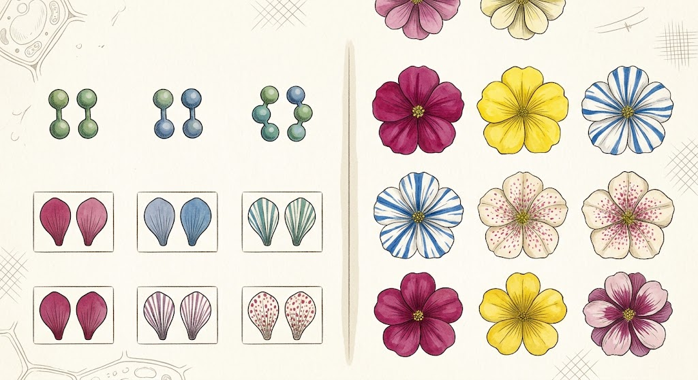

จีโนไทป์และฟีโนไทป์
จีโนไทป์ (Genotype) หมายถึง รูปแบบหรือชุดของแอลลีลที่สิ่งมีชีวิตมีอยู่ ซึ่งเป็นข้อมูลทางพันธุกรรมที่ได้รับมาจากพ่อและแม่ โดยสามารถเขียนแทนด้วยตัวอักษร เช่น AA, Aa และ aa หากมีแอลลีลเหมือนกันทั้งคู่ เช่น AA หรือ aa เรียกว่า ฮอมอไซกัส (Homozygous) ส่วนหากมีแอลลีลแตกต่างกัน เช่น Aa เรียกว่า เฮเทอโรไซกัส (Heterozygous)
ฟีโนไทป์ (Phenotype) หมายถึง ลักษณะที่แสดงออกและสามารถสังเกตหรือวัดได้ เช่น สีดอกของพืช ความสูง สีตา หรือหมู่เลือด ฟีโนไทป์ไม่ได้เกิดจากพันธุกรรมเพียงอย่างเดียว แต่ในหลายลักษณะยังได้รับอิทธิพลจากสิ่งแวดล้อมด้วย เช่น อาหาร การออกกำลังกาย อุณหภูมิ และสภาพแวดล้อมในการดำรงชีวิต
ตัวอย่างเช่น หากกำหนดให้ A เป็นแอลลีลที่ควบคุมลักษณะเด่น และ a เป็นแอลลีลลักษณะด้อย จีโนไทป์ AA และ Aa อาจแสดงฟีโนไทป์ของลักษณะเด่นเหมือนกัน ในขณะที่จีโนไทป์ aa จะแสดงฟีโนไทป์ของลักษณะด้อย ดังนั้น จีโนไทป์คือข้อมูลทางพันธุกรรมที่สิ่งมีชีวิตมี ส่วนฟีโนไทป์คือลักษณะที่แสดงออกมาให้เห็น ความสัมพันธ์ระหว่างทั้งสองส่วนช่วยให้เราศึกษาและทำความเข้าใจรูปแบบการถ่ายทอดลักษณะทางพันธุกรรมได้ง่ายขึ้น